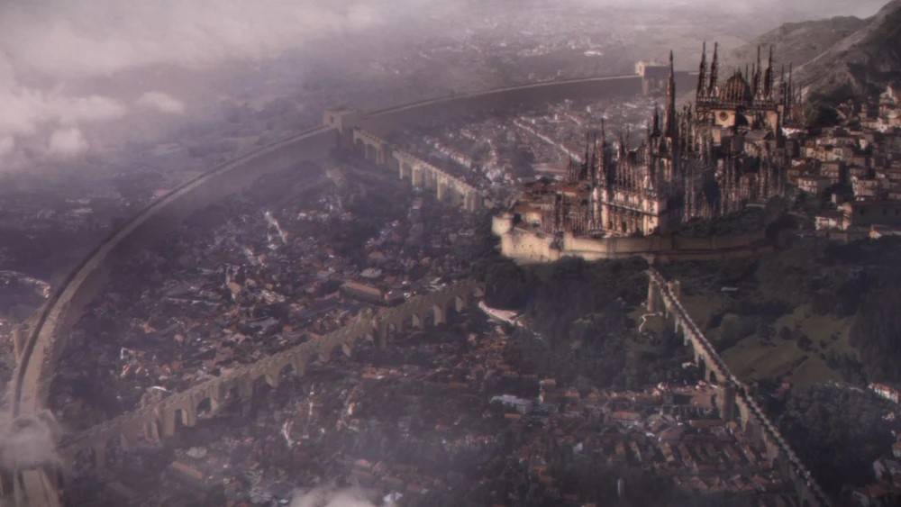
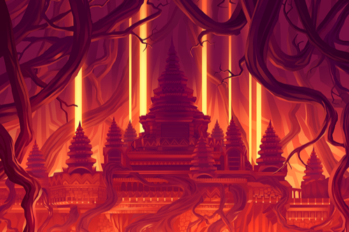

Dark Souls 1

With the Age of Ancients coming to an end with the death of the ancient dragons and the pygmys dealt with, Lord Gwyn ushered in the Age of Fire, a prosperous age marked by the reign of Gwyn and his family as gods as well as the spread of humanity across the world. The lord of sunlight and his godkin established the kingdom of Lordran where they ruled from the capital city of Anor Londo. Gwyn's most well known family members were his oldest son Faraam, God of War; daughter Gwynevere, Princess of Sunlight; and his youngest Dark Sun Gwyndolin. While the gods ruled from their city of sunlight the Witch of Izalith and her daughters retreated underground back to Izalith where they studied the chaos flame and eventually, in an act of hubris, tried creating their own version of the first flame which quickly spiralled out of control and consumed the witch and two of her daughters. This created what is known as the bed of chaos which spawned the demon race.

Gwyn, sensing that these demons could bring ruin to his kingdom took half his silver knights and marched into the depths of the earth to wage war against the demons of Izalith. The conflict was brutal and left the knights that survived with scorched black armor that came to be seen as a badge of honor for the knights. The war however ended in a stalemate with Lord Gwyn sealing off the path to Izalith and the demons content with being isolated to their homeland. For a time things were peaceful, then the first flame began to fade. This terrified the lord of sunlight for the first flame was the source of the god's power and with its fading so to would their reign. A new age would be ushered in, The Age of Dark, the age of humanity. This was unexceptable to Gwyn, he couldn't let go of his power or his fear of the dark so he took drastic measures. He branded humanity with the darksign. A brand that restricted their souls and gave humanity the curse of hollowing where they will gradualy lose their memories and their sanity and eventually become mindless wandering husks. With that done Gwyn traveled down to the kiln of the first flame and sacrificed himself to link the fire, artificially prolonging the age of fire. But that would only last for so long and eventually the first flame began to fade once again. This is when Dark Souls 1 begins.